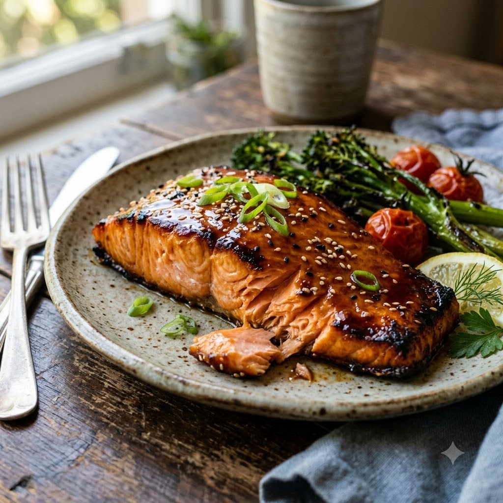

Soy-Glazed Air Fryer Salmon

Soy-Glazed Air Fryer Salmon
Airfryer – Grill 190°C 11 min — Serves 2
Prep ahead: Marinate salmon for 15 minutes — no longer, as the soy sauce can start to firm up the fish.
Ingredients
- 2 salmon fillets
- 1 tbsp soy sauce
- 1 tsp honey
- 1/2 tsp grated ginger (adrak)
- 1/2 tsp sesame oil
- 1 clove garlic (lehsun), minced
Method
1Preheat: Preheat the Airfryer to 190°C for 4 minutes before adding the food to the basket.
2Mix soy sauce, honey, ginger, sesame oil and garlic; marinate salmon 15 minutes.
3Place fillets skin-side down in the basket.
4Grill at 190°C for 11 minutes, no need to flip.
5Serve with steamed rice and vegetables.